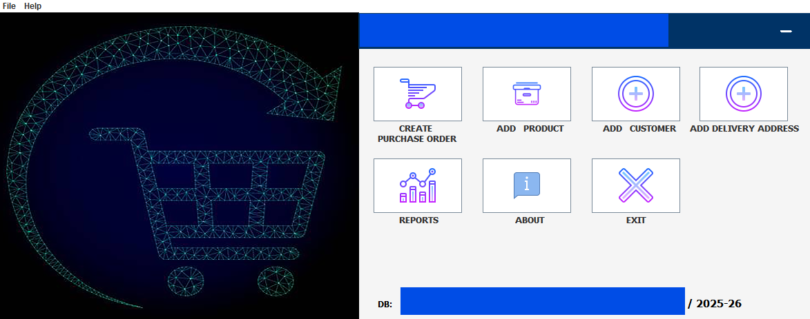
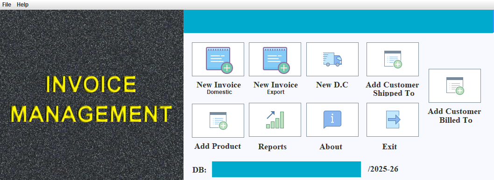
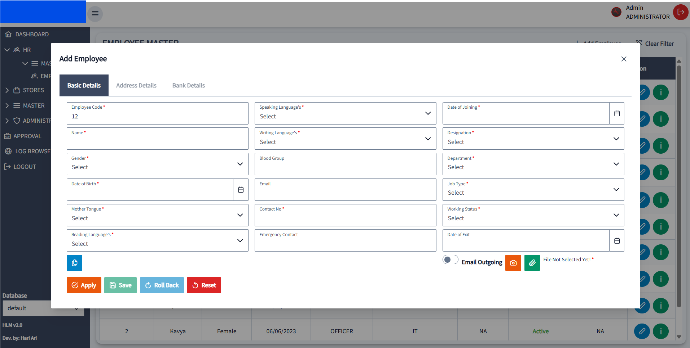
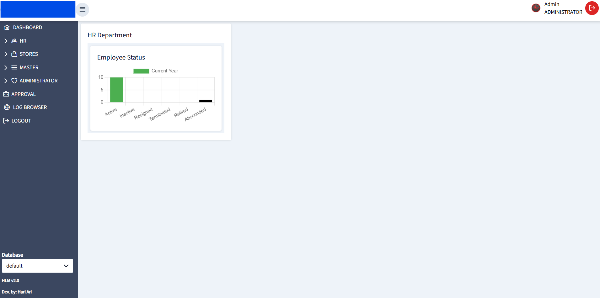
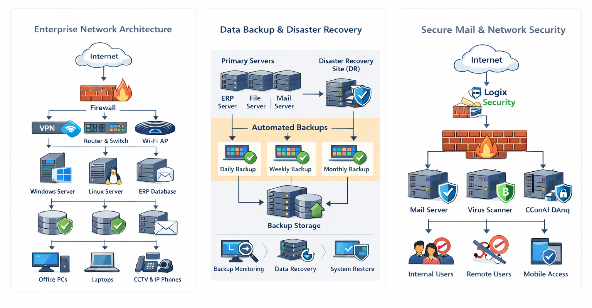

Hari Ari S
IT Infrastructure & ERP Solutions Manager
18+ Years Experience | Enterprise IT | ERP Development | Digital Transformation
IT Infrastructure & ERP Solutions Manager
18+ Years Experience | Enterprise IT | ERP Development | Digital Transformation
IT Infrastructure and ERP Solutions professional with 18+ years of experience designing enterprise IT environments, infrastructure architecture and business automation systems for manufacturing organizations.

Automated purchase workflow, approval tracking and documentation.

Invoice generation system.

HR Module system.

Employee Status.
